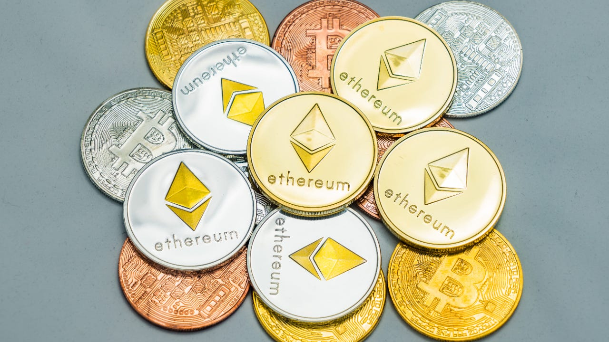

Cryptocurrency
A cryptocurrency is a type of currency which uses digital files as money. Usually, the files are created using the same ways as cryptography (the science of hiding information). Digital signatures can be used to keep the transactions safe, and let other people check that the transactions are real.The first cryptocurrencies were made to be free of government-given currencies. Cryptocurrencies use 'decentralized control'. That means that government can not control cryptocurrencies. This is different to 'centralized' electronic money and central banks. The control of each cryptocurrency works through a distributed ledger (a list of transactions shared by everyone), usually a blockchain, that serves as a public financial transaction database. Bitcoin, first released as open-source software in 2009. It is often called the first decentralized cryptocurrency Since then, over 4,000 cryptocurrencies (sometimes called altcoins, which is short for alternative coins) have been created
Most popular Cryptocurrencies as of 2022:
While Bitcoin may be the first major cryptocurrency to hit the market – it debuted in 2009 – many others have become highly popular, even if not quite as large as the original. Here are the largest cryptocurrencies by the total dollar value of the coins in existence, that is, the market capitalization, or market cap.
1. Bitcoin (BTC)
-Price: $42,776
-Market cap: $827 billion
-As the harbinger of the cryptocurrency era, Bitcoin is still the coin people generally reference when they talk about digital currency. Its mysterious creator — allegedly Satoshi Nakamoto — debuted the currency in 2009 and it’s been on a roller-coaster ride since then. However, it wasn’t until 2017 that the cryptocurrency broke into popular consciousness.
2. Ethereum (ETH)
-Price: $3,276
-Market cap: $402 billion
-Ethereum — the name for the cryptocurrency platform — is the second name you’re most likely to recognize in the crypto space. The system allows you to use ether (the currency) to perform a number of functions, but the smart contract aspect of Ethereum helps make it a popular currency.

3. Binance Coin (BNB)
-Price: $471.10
-Market cap: $81 billion
-Binance Coin is the cryptocurrency issued by Binance, among the largest crypto exchanges in the world. While originally created as a token to pay for discounted trades, Binance Coin can now be used for payments as well as purchasing various goods and services.

4. Tether (USDT)
-Price: $1.00
-Market cap: $78 billion
Tether’s price is anchored at $1 per coin. That’s because it is what’s called a stablecoin. Stablecoins are tied to the value of a specific asset, in Tether’s case, the U.S. Dollar. Tether often acts as a medium when traders move from one cryptocurrency to another. Rather than move back to dollars, they use Tether. However, some people are concerned that Tether isn’t safely backed by dollars held in reserve but instead uses a short-term form of unsecured debt.

5. Solana (SOL)
-Price: $149.72
-Market cap: $47 billion
-Launched in March 2020, Solana is a newer cryptocurrency and it touts its speed at completing transactions and the overall robustness of its “web-scale” platform. The issuance of the currency, called SOL, is capped at 480 million coins.